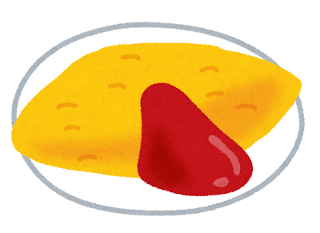
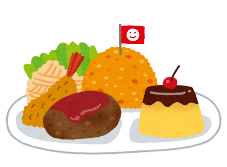
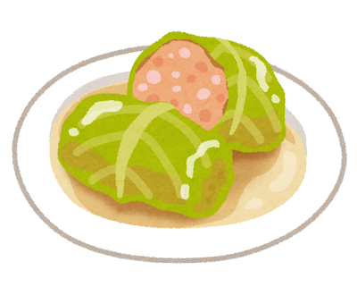
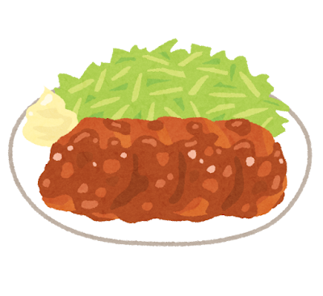

Hayashi Rice and Omurice: The Heart of Yoshoku

What is Yoshoku?
Yoshoku (洋食) literally means “Western food,” but the term is misleading. Yoshoku is not Western food served in Japan — it is a distinctly Japanese cuisine that borrows Western forms and fills them with Japanese sensibility. Born during the Meiji era as Japan modernized and opened to the West, yoshoku dishes were created by Japanese chefs interpreting European recipes with local ingredients and Japanese palates in mind.
Over more than a century, yoshoku has become so deeply embedded in Japanese food culture that most Japanese people do not think of it as “foreign” at all. It is simply part of what Japan eats.
The Yoshoku Classics
Hayashi Rice (ハヤシライス)
Thin-sliced beef and onions simmered in a rich demi-glace sauce with tomato and red wine, served over white rice. Named either after a Dr. Hayashi who supposedly invented it, or from the English word “hashed” (as in hashed beef), it occupies the midpoint between curry rice and beef stew. Where curry is spiced, hayashi rice is all about depth — the long-simmered sweetness of onions and the wine-dark richness of the sauce.
Omurice (オムライス)
Ketchup-flavored fried rice wrapped in a thin, golden omelet — or in the modern “tanbopo” style, a pillowy, barely-set French omelet draped over rice and sliced open to flow across the plate. Omurice was born in Tokyo s Ginza district in the early 20th century and became the iconic kissaten dish. A chef s skill is judged by the smoothness and jiggle of their omelet.

Okosama Lunch (お子様ランチ)
The “children s lunch plate” is a yoshoku greatest hits compilation on a single plate: a small mound of ketchup rice topped with a flag, a hamburg patty, a fried shrimp, spaghetti napolitan, a korokke, and a salad. It is a joyful, colorful monument to yoshoku culture and a beloved childhood memory for generations of Japanese.

Roll Cabbage (ロールキャベツ)
Japan s take on stuffed cabbage: tender cabbage leaves wrapped around a seasoned meat filling, simmered in consomme or tomato broth until meltingly soft. A home-cooking staple that shows how completely European techniques were absorbed into Japanese family meals.

Pork Chop (ポークチャップ)
A pan-fried pork cutlet glazed in a sweet ketchup-based sauce with onion — simpler than tonkatsu but equally satisfying. A staple of home yoshoku cooking.

Yoshoku is living proof that culture is not a fortress but a kitchen — open, absorbing, and always cooking up something new from whatever walks through the door.